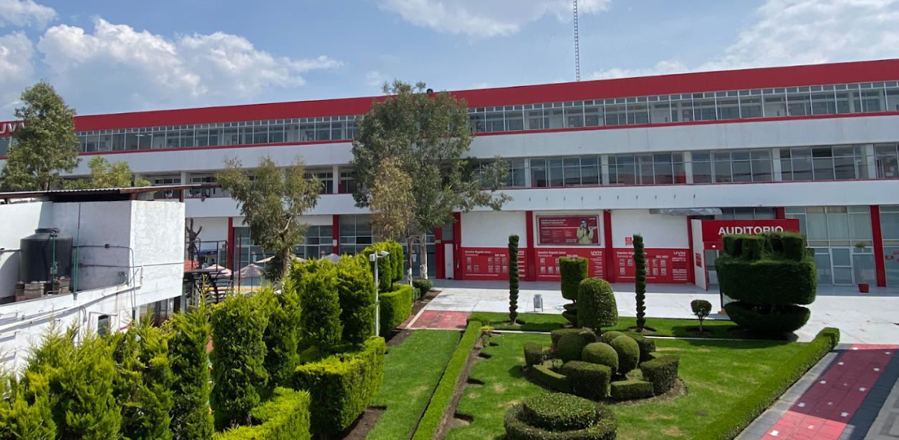

Campus Texcoco
Tecnologías de la Información 2

Maestro:
Felix Jhonathan Gasparino Reyes
Alumno:
Rogelio Magaña Jantes
Bienvenido al proyecto de Tecnologías de la Información 2 - Campus Texcoco - Ciclo Escolar 2026